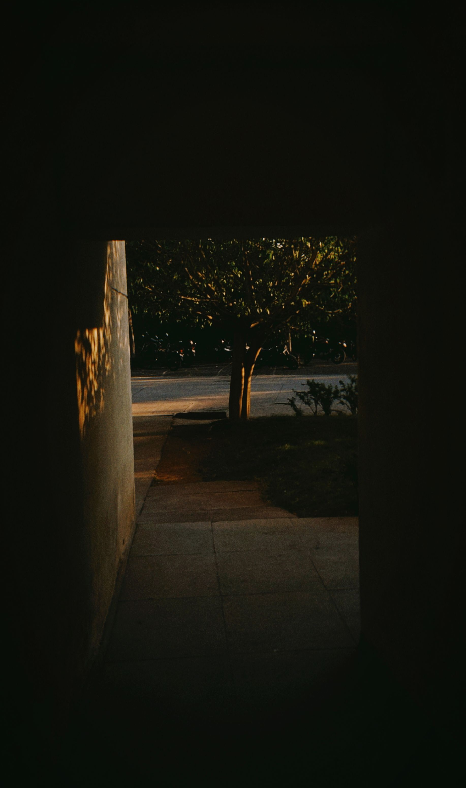
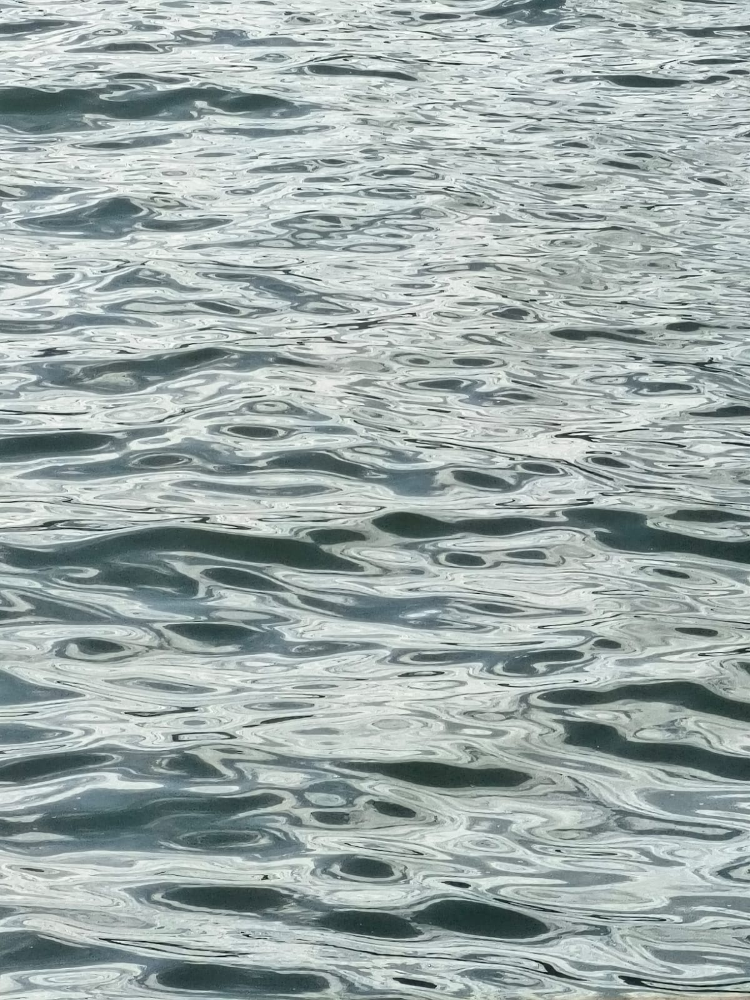
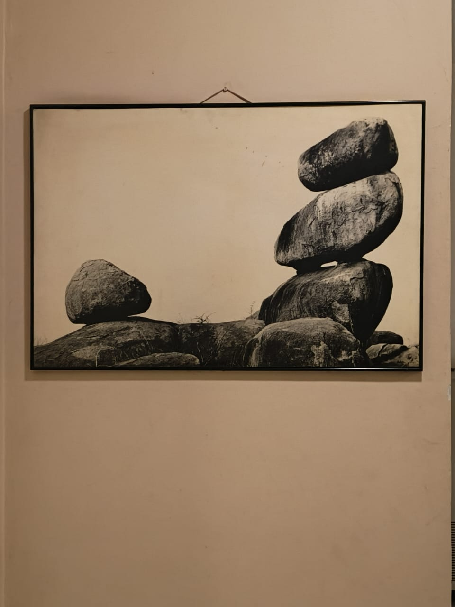
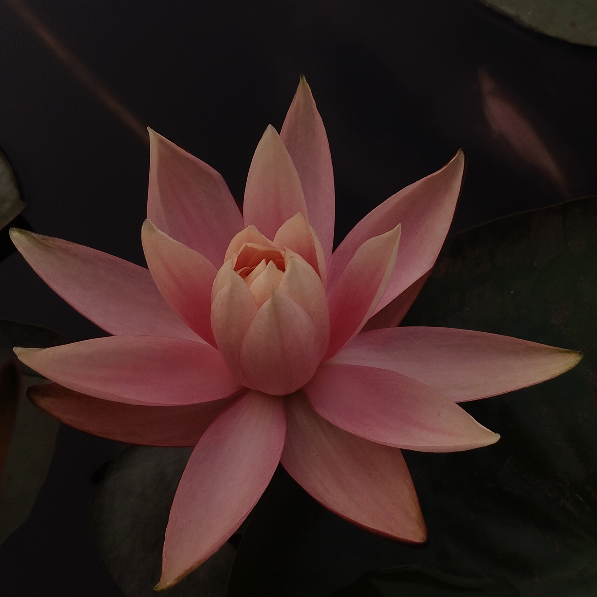
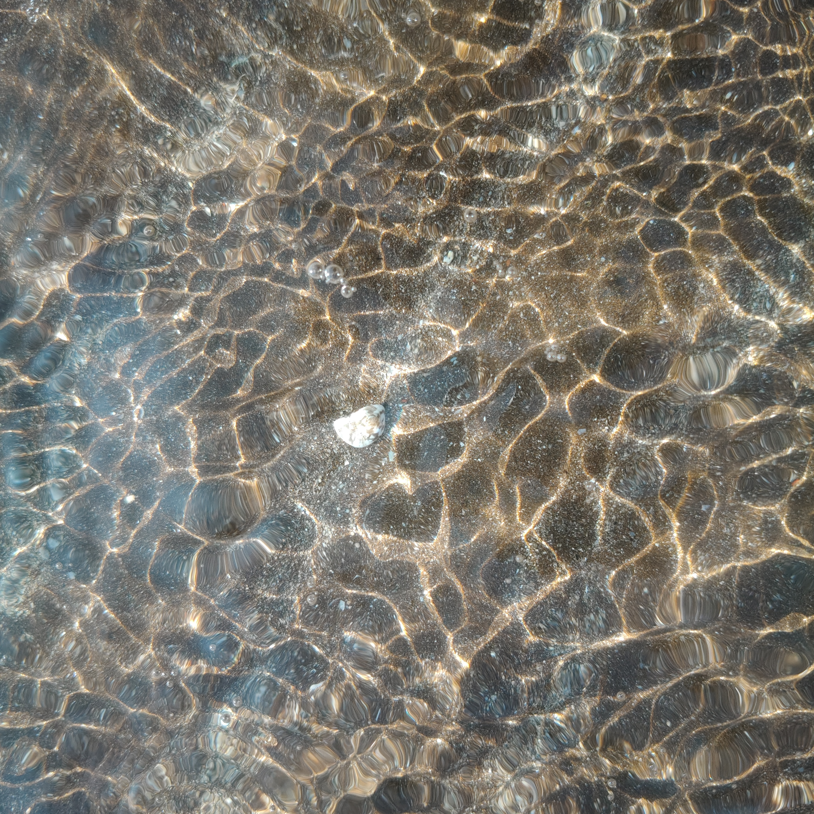
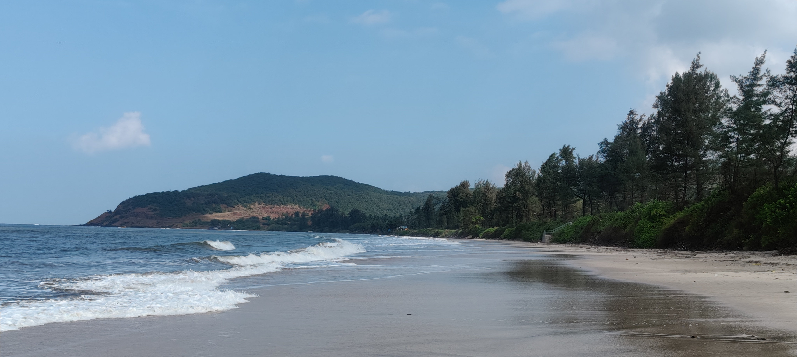
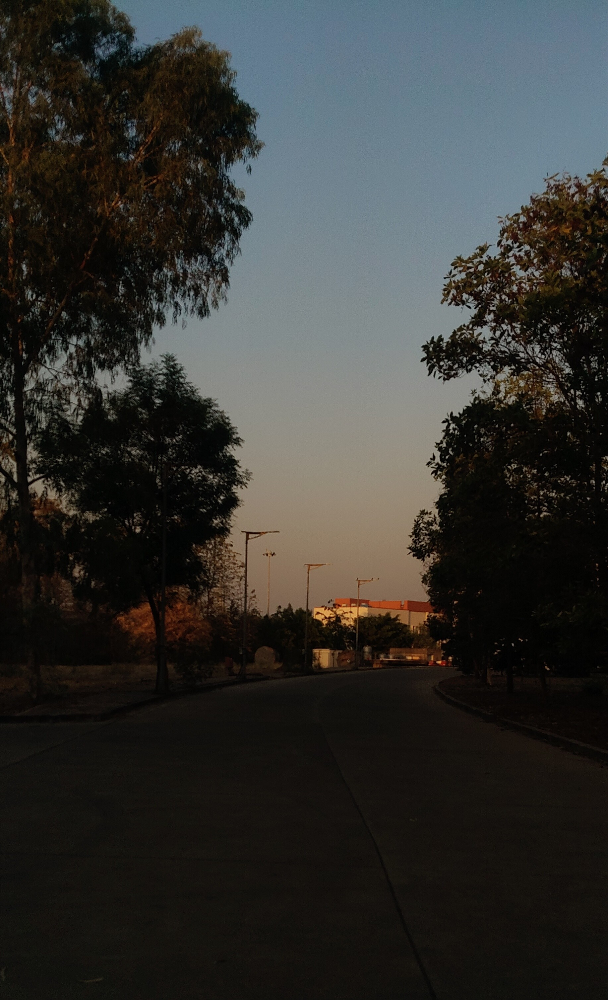
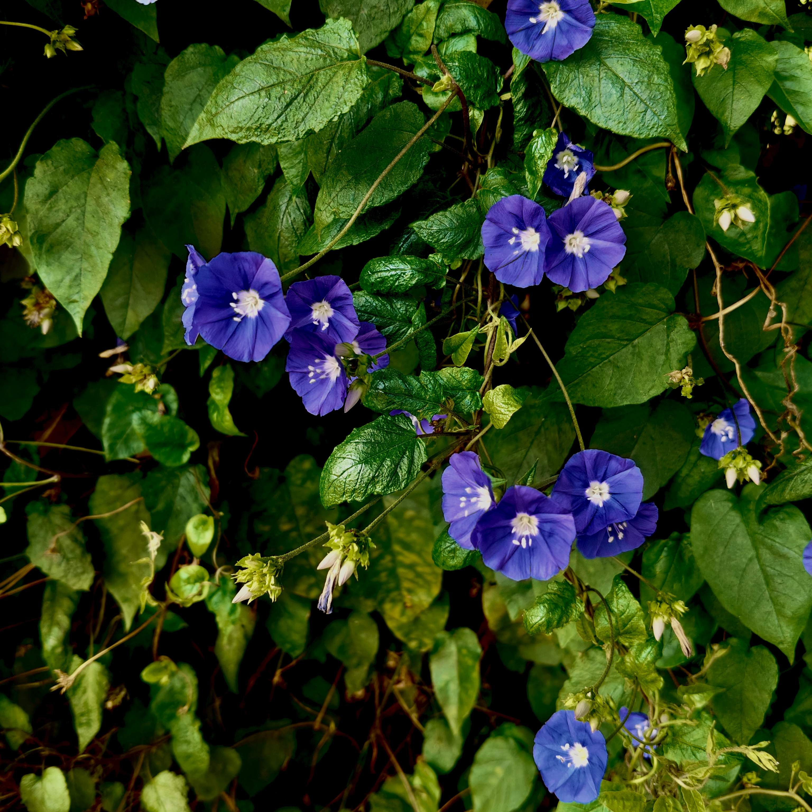

// undergraduate researcher
Exploring the cosmos,
one equation at a time.
Hello! I'm Sipra Subhadarsini Sahoo a BS-MS student at the Indian Institute of Science Education and Research (IISER) Pune, India.
Born and brought up in Cuttack, Odisha, I spent much of my childhood wondering what lay beyond the dark sheath of sky surrounding us. That curiosity eventually found a home at IISER Pune, where I am currently pursuing the BS-MS program in Physics with a minor in Data Science. The journey has tested not only my academic abilities, but also my lifestyle, discipline, and persistence, while continually deepening my fascination with understanding the universe.
My interests broadly lie at the intersection of cosmology, astrophysics, and computational physics, particularly in understanding how large-scale structures evolve across the Universe and how observational data can be used to probe the underlying physics governing them. I am deeply interested in cosmological models, dark matter and dark energy, galaxy evolution, compact astrophysical systems, and the role of statistical and numerical methods in extracting physical insight from complex datasets.
Over time, I have become increasingly drawn toward computational and data-intensive approaches in modern physics — ranging from numerical cosmology and CMB foreground modelling to GPU-accelerated simulations, relativistic hydrodynamics, and quantum information theory. I enjoy working at the interface of physics, mathematics, and computation, especially in contexts involving simulations, inference methods, image-based analysis, and large astronomical datasets.
I am particularly fascinated by how observations, simulations, and theory come together to address fundamental questions about the Universe — from the behaviour of matter on cosmological scales to the physics of galaxies, gravitational phenomena, and early-Universe evolution.
Outside academics, I spend my time taking photographs, sketching (sometimes on paper, sometimes on walls), playing chess, watching films, and reading books that make me question my existence. I also enjoy working on random side projects, collecting unfinished ideas, and sitting with nothing but my thoughts.
// scholarly work
Research Experience
Data-Driven Astronomy
Indian Science Academy Developed a Python-based ISS tracking system integrating real-time orbital data, predictive pass calculations, and interactive visualisation. Built an interactive Streamlit dashboard and automated TLE data retrieval for visibility prediction and orbital analysis.
Foundations and Frontiers of Magnetism
Physical Research Laboratory (PRL), Ahemdabad
Studied classical and quantum theories of magnetism, including Langevin,
Pauli, Landau, Ising, Heisenberg, and Hubbard models, along with exchange
interactions and cooperative magnetic phenomena.
Efficient Characterization of Quantum Noise via Pauli Channel Estimation
Harish-Chandra Research Institute (HRI), Prayagraj
Explored quantum noise characterization through Pauli channel estimation,
adaptive protocols, and quantum memory-assisted strategies, with applications
to quantum information processing and NISQ devices.
Relativistic Fluid Dynamics in Covariant Tensor Formalism
National Institute of Science Education and Research (NISER), Bhubaneswar
Studied relativistic hydrodynamics using covariant tensor formalism, focusing
on conservation laws, relativistic Boltzmann equations, entropy production,
and applications to quark–gluon plasma in heavy-ion collisions.
Parallel Data Processing Engine: CPU-GPU Correlation Matrix
Developed a GPU-accelerated computation engine using PyTorch and CuPy to estimate large-scale correlation matrices from high-dimensional time-series datasets. Explored memory-efficient execution strategies, CPU-GPU transfer overheads, and computational scaling behaviour for optimized parallel performance.
View GitHub RepositoryNumerical ΛCDM Cosmology
Numerically solved the Friedmann equations to study the expansion history of the Universe across radiation-, matter-, and dark-energy- dominated eras. Computed cosmological distance measures and analysed the dependence on key cosmological parameters.
View GitHub RepositoryCMB Spectrum & Foreground Modelling
Modelled the blackbody spectrum of the Cosmic Microwave Background alongside astrophysical foregrounds including galactic synchrotron and thermal dust emission, studying their frequency dependence in observational cosmology.
View GitHub RepositoryDuoSense: Alcohol & Drowsiness Monitoring Framework
Designed and implemented a driver safety prototype integrating eye-blink and alcohol sensors with an Arduino Nano microcontroller. Developed real-time detection logic and automated motor cut-off mechanisms for fail-safe vehicle monitoring.
GW Open Data Workshop Study Hub
Attended a two-day study hub organised at IUCAA featuring a series of lectures and discussions based on the Gravitational Wave Open Data Workshop (GWODW). The program also included a panel discussion centered around topics presented during the workshop lectures.
Quantum Information & Emerging Quantum Technologies (QIEQT)
Presented at a national conference focused on quantum information science, quantum computation, communication, and emerging quantum technologies.
Introduction to Fusion Energy & Plasma Physics
Completed an online lecture series introducing plasma confinement, fusion principles, and applications of plasma physics in modern energy research.
Introduction to Quantum Computing
Studied foundational concepts connecting quantum mechanics, quantum algorithms, and computational models.
Frontiers in Physics
Attended lectures and discussions on contemporary developments across theoretical and experimental physics.
Introduction to Computing in Astronomy
Explored computational tools, programming techniques, and data analysis methods used in modern astronomical research.
Summer School on Astrophysics & Astronomy
Selected among participants nationwide for an intensive program on stellar evolution, compact objects, and observational astronomy techniques.
// curriculum vitae
Academic Profile
BS-MS
IISER Pune
Major: Physics · Minor: Data Science
Five-year integrated dual degree programme.
Higher Secondary Certificate
L.R. DAV Public School
Central Board of Secondary Education (CBSE) · Cuttack, Odisha, India
Python, C++, Java, SQL
Numerical methods, Monte Carlo simulations, statistical error analysis, time-series analysis, spectral analysis, linear algebra routines, numerical solvers
NumPy, SciPy, Pandas, Matplotlib, Astropy, Astropy.io.fits, Streamlit
Cosmological parameter estimation, distance-redshift relations, JWST data interpretation, ISS pass prediction, curve fitting, computational astrophysics
Linux, Git/GitHub, Jupyter Notebook, Google Colab, Visual Studio Code, Conda Environments, LaTeX, HTML
// beyond academics
Outreach & Activities
GeoPulse: ECS Department Newsletter
Contributed to the first edition of GeoPulse, the biannual newsletter of the Department of Earth and Climate Science at IISER Pune. Conducted interviews with faculty members and alumni, contributing to editorial and outreach efforts aimed at showcasing departmental research, student activities, and academic initiatives.
Canonical: Inter IISER-IISc Physics Magazine
Published an article titled “How Time Became Crystalline”
in the second issue of Canonical, an inter-IISER/IISc physics
magazine focused on scientific writing and outreach.
View Magazine
Head of Technical Team- Pixels, IISER Pune
Leading the technical team of the photography club at IISER Pune. Designed, developed, and currently maintain the club’s official website, managing deployment, updates, and visual presentation for club activities and events.
// through the lens
Photo Journal








// reach across the void